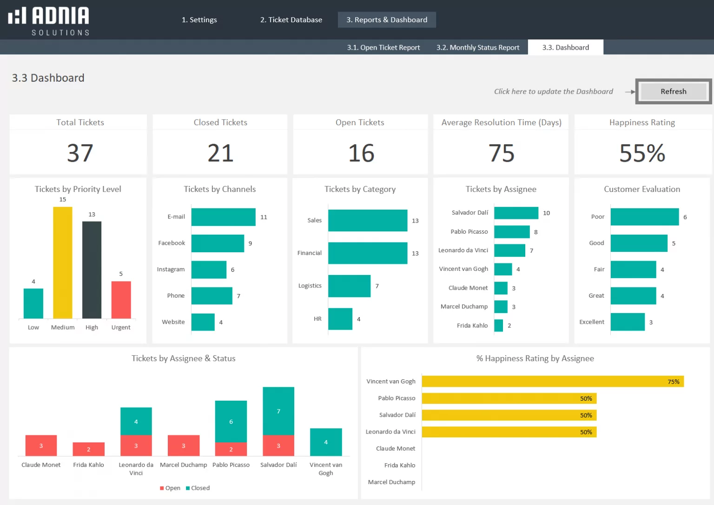
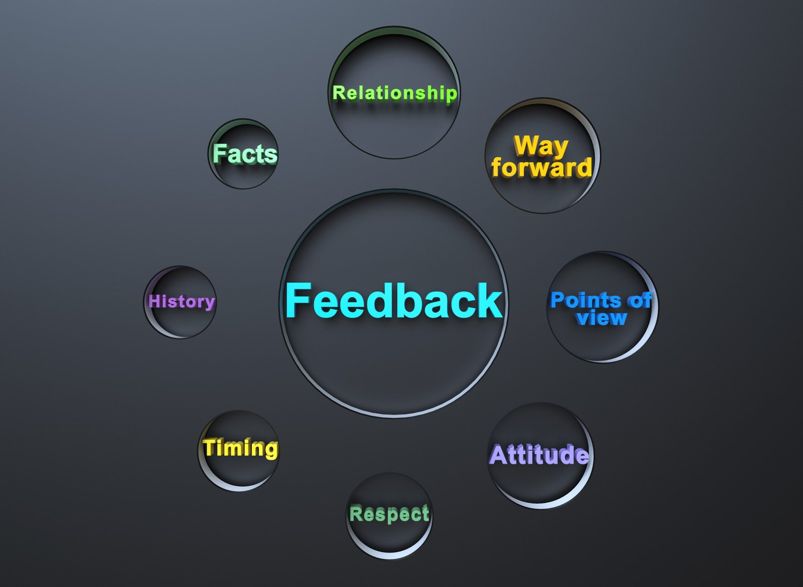

How It Works

Report Issues
Notify authorities about broken streetlights, potholes, and more.

Track Progress
Follow up on the status of your reported issues.

Provide Feedback
Share your thoughts and experiences to improve services.